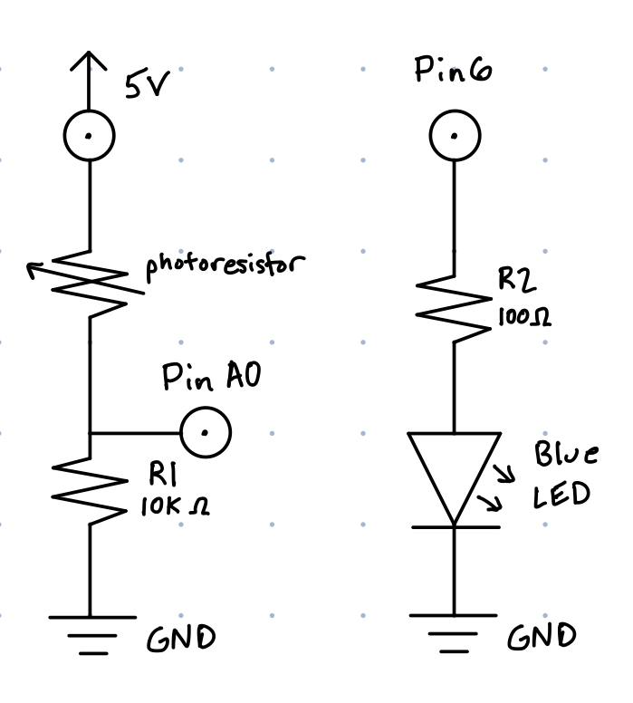
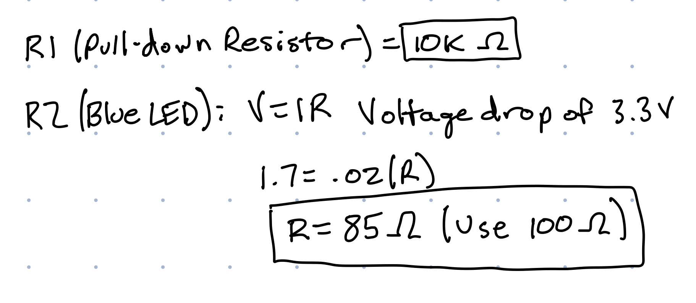
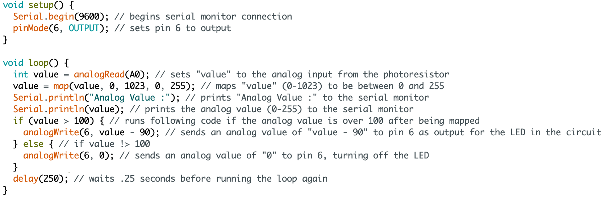

Michael Wentworth's Assignment 3!

Circuit for Assignment 3

Above circuit in action. When light hits the photoresistor, the blue LED will turn on with varying brightness corresponding to how much light is detected. When light, in excess of the ambient lighting in the room, is blocked, the LED will turn off.

Schematic for the above circuit. Resistor values were chosen using Ohm's Law (Calculations shown below)

Calculations for the resistor values in the circuit. 10K Ohms of resistance was chosen for the button switch simply because this is a general value for a pull-down resistor and was used in the in class examples. Ohms Law was used to calculate resistor values for blue LED. Blue LEDs have a voltage drop of 3.3V and a desired current of 20 mA, the desired resistor value calculates to 85 Ohms, but 100 Ohms is the closest resistor, so this value is used for R2

Code for the Arduino Circuit. Input values from A0 (at the voltage divider) vary between 0 and 1023, typically around 400-600 depending on ambient lighting. These values are mapped to a 0-255 scale using the map() function in Arduino. This allows the value to be used as an analog output for the blue LED that varies the brightness of the LED based on how much light is detected by the photoresistor.